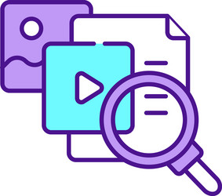

Our Work

Fact-Checking
We verify information circulating on social media to ensure it is accurate and reliable.

Media Literacy
Educating users on how to critically evaluate information and recognize Disinformation.

Research
Conducting research on the spread and impact of Disinformation.
Community Outreach
Working with communities to raise awareness and build resilience against Disinformation.

Collaboration
Partnering with organizations and platforms to develop effective strategies against Disinformation.